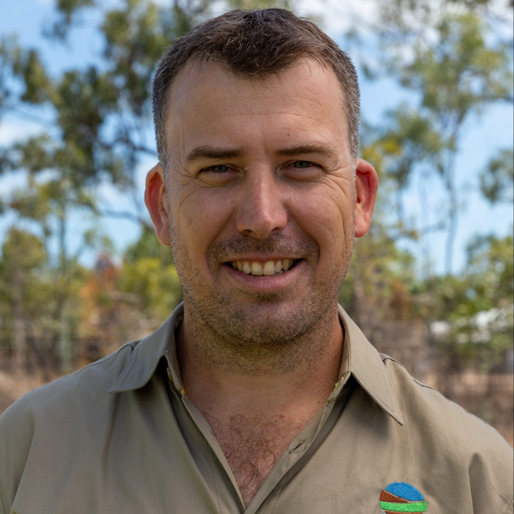

Jason Lange | Director
Jason is an experienced Sustainability Practitioner that has focused much of his working career on
integrated Energy, Water and Waste management with a focus on Dry Tropical solutions that are
inspired by nature. He has over 10 years of experience in a broad range of environmental fields.
These include Aquaculture, Environmental Management, Ecology, Sustainable Education, Behaviour
Change Campaigns, Water Quality Management, Erosion and Sediment Control, Water Conservation and
ecological regeneration.